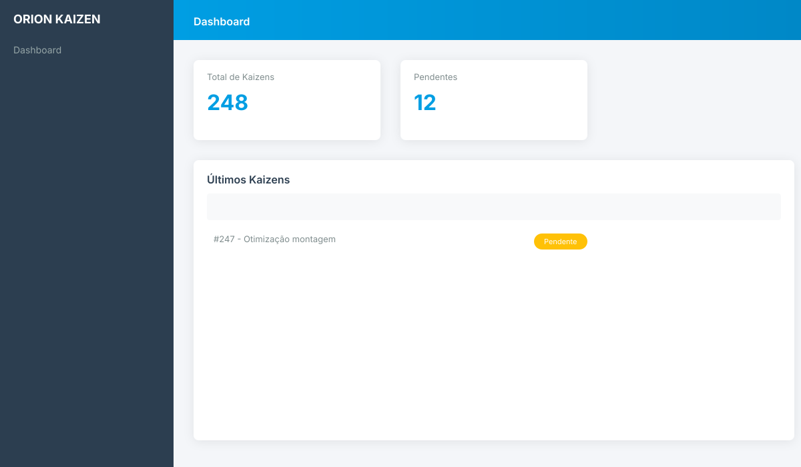
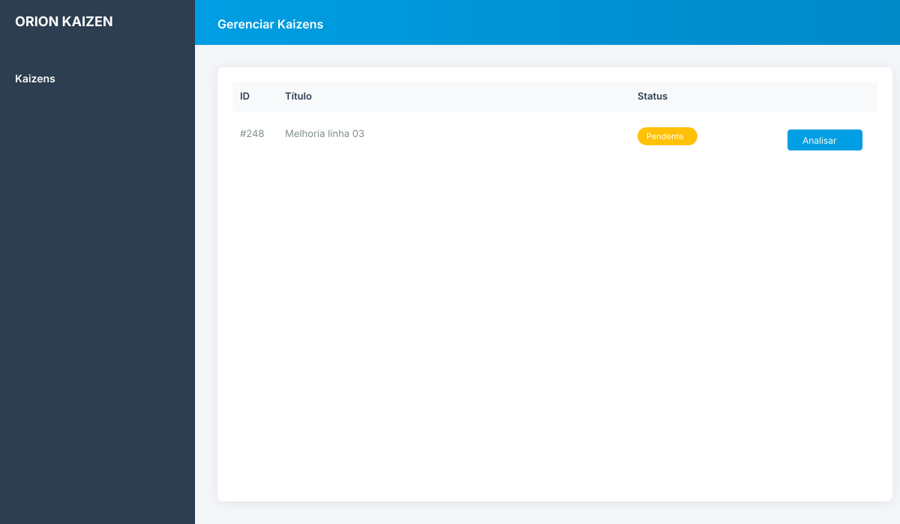
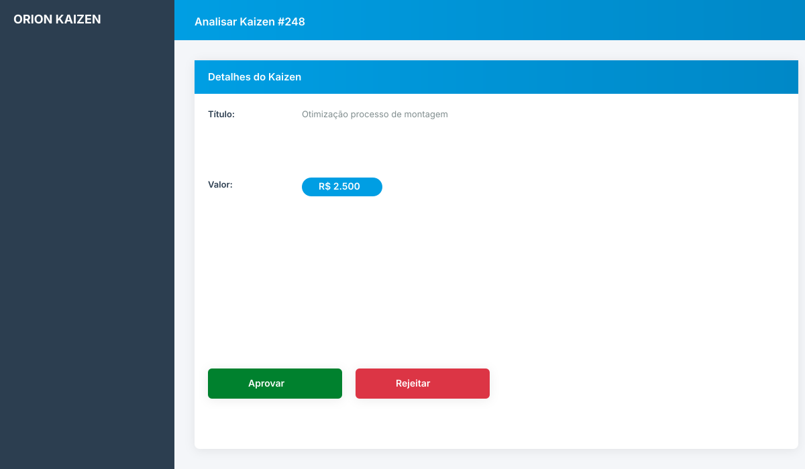
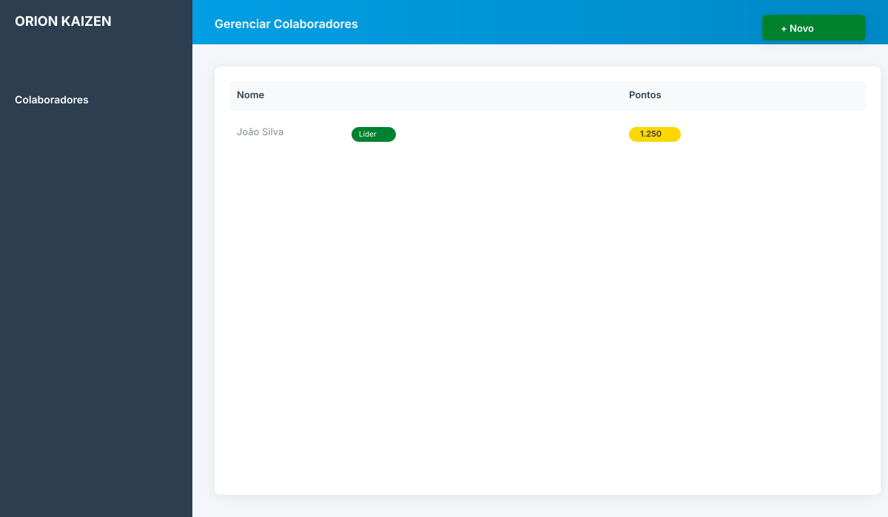
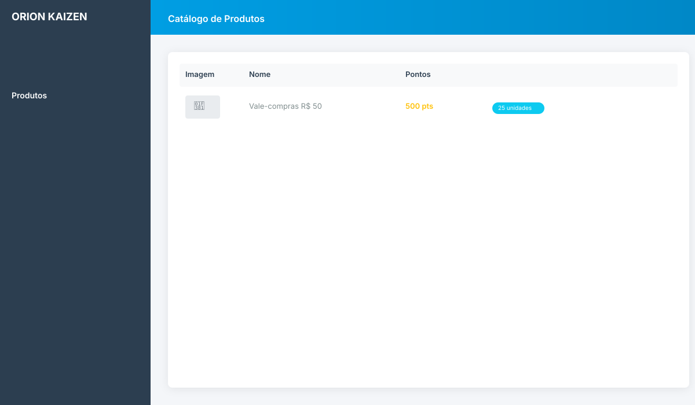
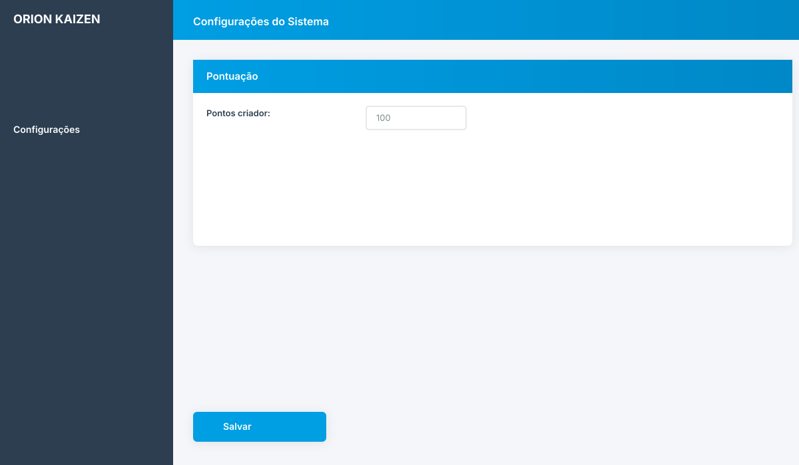

Visão Geral do Sistema
Como administrador master, você tem acesso completo ao sistema para gerenciar Kaizens, colaboradores, produtos e todas as configurações.
IMPORTANTE: Com grandes poderes vêm grandes responsabilidades. Suas ações afetam todo o sistema e não podem ser desfeitas facilmente.
Acesso Administrativo
1
Acesse a Área Admin
URL do admin: http://seudominio.com/admin/

2
Credenciais de Administrador
Use uma conta de colaborador com permissão de Gestor ativa no banco de dados
gestor_colaborador = 1
Segurança: Nunca compartilhe suas credenciais de administrador. Considere usar senhas fortes e alterá-las periodicamente.
Gerenciamento de Kaizens
Visualizar Kaizens
1
Acessar Lista
Menu: Kaizen → Listar Kaizens
Você verá todos os Kaizens do sistema com filtros por:
- Status (Pendente, Aprovado, Rejeitado)
- Setor
- Colaborador
- Período

Analisar e Aprovar Kaizen
1
Abrir Kaizen
Clique no botão "Analisar" do Kaizen pendente

2
Revisar Informações
Analise cuidadosamente:
- Tipo de Benefício: Categoria da melhoria
- Complemento: Valor anual em R$ (calculado automaticamente)
- Descrição: Situação atual, objetivo e resultado
- Anexos: Evidências fotográficas e documentos
- Colaboradores: Quem participou da ideia
3
Tomar Decisão
Opção A - Aprovar:
- Selecione "Aprovar" no campo Análise
- Sistema calculará pontos automaticamente baseado em:
- Tipo do Kaizen
- Valor do complemento anual
- Categoria/Redução associada
- Ajuste os pontos manualmente se necessário
- Adicione comentário (opcional)
- Clique em "Salvar Análise"
Opção B - Rejeitar:
- Selecione "Rejeitar" no campo Análise
- OBRIGATÓRIO: Escreva comentário explicando o motivo
- Clique em "Salvar Análise"
Opção C - Devolver para Correção:
- Selecione "Devolver" no campo Análise
- Escreva o que precisa ser ajustado
- Colaborador poderá editar e reenviar
Sistema Automático: Ao aprovar, o sistema:
- Credita pontos automaticamente na conta do colaborador
- Divide pontos entre colaborador principal e auxiliares (se houver)
- Registra no log de auditoria
- Envia email de notificação
Entendendo o Cálculo de Complementos
Sistema de Complementos v2.0
O valor em R$ é calculado automaticamente conforme o tipo:
| Tipo |
Entrada do Usuário |
Cálculo Aplicado |
| Reais Economizados |
Valor em R$ |
Sem cálculo (valor direto) |
| Horas Poupadas |
Quantidade de horas/ano |
Horas × Custo da Linha Parada |
| Kg Carbono Reduzido |
Quantidade de kg |
Kg × (Produtividade USD × Câmbio) |
Atenção: Os valores de cálculo (custo linha parada, câmbio, etc.) são configurados em Configurações → Geral
Buscar e Filtrar
Ferramentas de Busca
- Busca Rápida: Digite nome do colaborador ou palavra-chave
- Filtro por Status: Pendentes, Aprovados, Rejeitados
- Filtro por Setor: Visualize Kaizens de setores específicos
- Filtro por Período: Selecione intervalo de datas
Gerenciamento de Colaboradores
Cadastrar Colaborador
1
Acessar Cadastro
Menu: Colaboradores → Novo Colaborador

2
Preencher Dados
Campos obrigatórios:
- Nome Completo
- Email: Será usado para notificações
- CPF: Serve como login (somente números)
- Senha: Senha inicial (colaborador pode alterar)
- Setor: Setor de trabalho
- Unidade: Filial/local
Permissões especiais:
- Líder de Setor: Pode analisar Kaizens do próprio setor
- Gestor: Acesso completo ao admin (cuidado!)
3
Salvar
Clique em "Cadastrar" - colaborador já pode fazer login
Editar Colaborador
Modificar Informações
Menu: Colaboradores → Listar → Clique em "Editar"
- Alterar dados cadastrais
- Resetar senha
- Ativar/desativar usuário
- Ajustar saldo de pontos manualmente (quando necessário)
- Promover a líder ou gestor
CUIDADO: Ao alterar saldo de pontos manualmente, sempre registre o motivo no campo de observações para auditoria.
Extrato de Pontos
Visualizar Histórico
Na lista de colaboradores, clique em "Extrato" para ver:
- Todos os ganhos de pontos (por Kaizen aprovado)
- Todos os resgates de produtos
- Ajustes manuais
- Saldo atual e anterior
- Data e descrição de cada transação
Gerenciamento de Produtos
Cadastrar Produto
1
Acessar Cadastro
Menu: Produtos → Novo Produto

2
Preencher Informações
- Nome do Produto: Título que aparecerá no catálogo
- Descrição: Detalhes do produto
- Categoria: Agrupe produtos similares
- Pontos: Custo em pontos para resgate
- Foto: Imagem do produto (recomendado 600x600px)
- Estoque: Quantidade disponível (opcional)
- Ativo: Marque para exibir no catálogo
3
Salvar
Produto estará imediatamente visível no catálogo dos colaboradores
Gerenciar Resgates
Acompanhar Trocas
Menu: Produtos → Resgates
- Veja todos os resgates realizados
- Filtre por colaborador, produto ou período
- Marque resgates como "Entregue" após entregar o produto
- Imprima relatório de resgates pendentes
Importante: Resgates são permanentes. Os pontos são debitados imediatamente e não podem ser devolvidos pelo sistema (somente ajuste manual).
Categorias de Produtos
Organizar Catálogo
Menu: Produtos → Categorias
- Crie categorias (ex: Eletrônicos, Vale-Compras, Experiências)
- Facilita navegação dos colaboradores
- Organize produtos por valor/tipo
Configurações do Sistema
Tipos de Kaizen
Gerenciar Tipos
Menu: Configurações → Tipos de Kaizen
Aqui você define as categorias de benefício:
- Qualidade
- Segurança
- Meio Ambiente
- Ergonomia
- Custos
- Etc.

Cada tipo possui:
- Nome: Rótulo exibido
- Complemento: Tipo de cálculo (Reais, Horas ou Kg Carbono)
- Pontuação Base: Pontos concedidos para essa categoria
Parâmetros de Cálculo
Configurar Valores
Menu: Configurações → Geral
Configure os valores usados nos cálculos automáticos:
| Parâmetro |
Uso |
| Custo Linha Parada |
Valor/hora usado para calcular "Horas Poupadas" |
| Produtividade USD |
Valor por kg de carbono em dólar |
| Câmbio Atual |
Cotação USD→BRL para conversão |
Atenção: Alterar estes valores afeta apenas NOVOS Kaizens. Kaizens já cadastrados mantêm os valores originais.
Setores e Unidades
Estrutura Organizacional
Setores: Menu → Configurações → Setores
- Cadastre os setores da empresa
- Associe líderes aos setores
- Use para filtrar Kaizens e relatórios
Unidades: Menu → Configurações → Unidades
- Cadastre filiais/plantas
- Colaboradores vinculados a unidades
- Relatórios por localização
Configurações de Email
SMTP e Notificações
Arquivo: app/configuracoes.php
Configure servidor SMTP para envio de emails automáticos:
- Host SMTP
- Porta (geralmente 587 ou 465)
- Usuário e senha
- Email remetente
$mail->Host = 'smtp.seudominio.com';
$mail->Port = 587;
$mail->Username = 'sistema@seudominio.com';
$mail->Password = 'senha_smtp';
Emails automáticos enviados:
- Novo Kaizen cadastrado (para líderes)
- Kaizen analisado (para colaborador)
- Recuperação de senha
Relatórios e Exportações
Exportar Kaizens
Gerar Planilha
Menu: Kaizen → Exportar
- Aplique filtros (período, setor, status)
- Clique em "Exportar para Excel"
- Planilha contém todos os dados dos Kaizens filtrados
- Use para análises externas ou arquivamento
Dashboards e Métricas
Indicadores na Home
A página inicial do admin exibe:
- Kaizens Pendentes: Aguardando análise
- Kaizens Aprovados (mês): Performance mensal
- Total de Pontos Concedidos: Engajamento geral
- Colaboradores Ativos: Base de usuários
- Resgates Pendentes: Produtos a entregar
Filtros Avançados
Análises Customizadas
Menu: Kaizen → Filtrar
Combine múltiplos filtros:
- Período específico
- Setor ou colaborador
- Tipo de benefício
- Faixa de pontos concedidos
- Status de análise
Resultados podem ser exportados diretamente
Manutenção e Troubleshooting
Banco de Dados
Conexão
Arquivo: app/conexao8.php
$servidor = 'localhost';
$usuario = 'root';
$senha = '';
$banco = 'orionv2_frontend';
Altere conforme servidor de produção
Problemas Comuns
Emails Não Enviados
Verificar:
- Configurações SMTP em
app/configuracoes.php
- Firewall bloqueando porta 587/465
- Credenciais SMTP corretas
- PHPMailer instalado (versão 6.7.1+)
Pontos Não Creditados
Verificar:
- Status do Kaizen = "Aprovado"
- Campo pontos_kaizen preenchido
- Tabela
log registrou a transação
- Saldo em
colaborador.ponto_colaborador
Upload de Arquivos Falha
Verificar:
- Permissões da pasta
imgs/kaizen/ (escrita)
- Limite
upload_max_filesize no php.ini (mín. 10MB)
- Extensão permitida: jpg, png, pdf, doc, xls, zip
Suporte Técnico
Arquivos Críticos
Sempre faça backup antes de modificar:
app/conexao8.php - Conexão bancoapp/funcoes8.php - Funções do sistemaapp/configuracoes.php - SMTP- Banco de dados completo (via phpMyAdmin)
BACKUP REGULAR: Faça backups semanais do banco de dados e mensais dos arquivos. Guarde em local seguro.
Transferir Administração
Se precisar passar a administração para outra pessoa:
1
Cadastrar Novo Administrador
Crie colaborador e marque como Gestor
2
Compartilhar Documentação
Forneça acesso a:
- Este guia (URL:
http://seudominio.com/guia/admin/)
- Credenciais de acesso
- Documentação técnica em
/docs/
- Informações de SMTP e servidor
3
Período de Transição
Recomendado:
- 2 semanas de acesso duplo
- Treinamento hands-on
- Acompanhamento de análise de Kaizens
- Teste de todas funcionalidades
Recursos Adicionais
Documentação
Pasta /docs/ contém documentação técnica detalhada
Código-Fonte
Sistema PHP 8 procedural com comentários inline
Logs do Sistema
Tabela log registra todas transações de pontos
Contato Técnico
Para suporte técnico avançado ou customizações, consulte o desenvolvedor original ou equipe de TI interna.